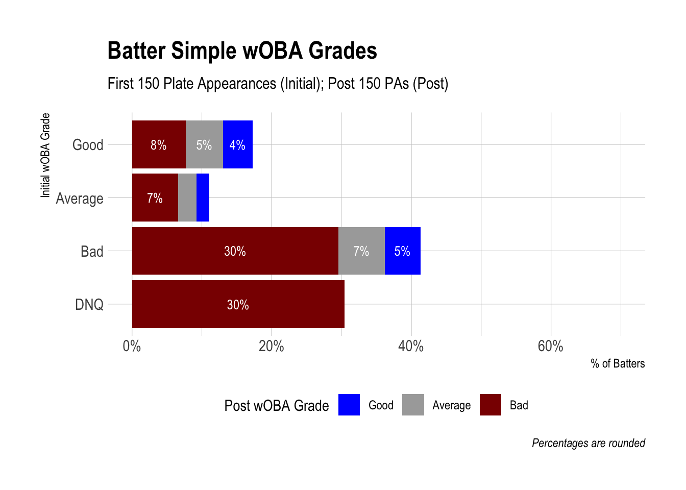
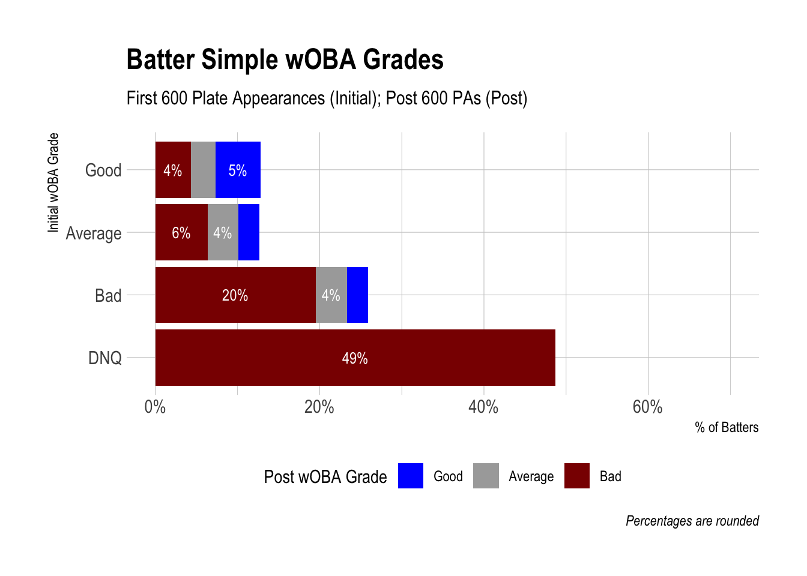
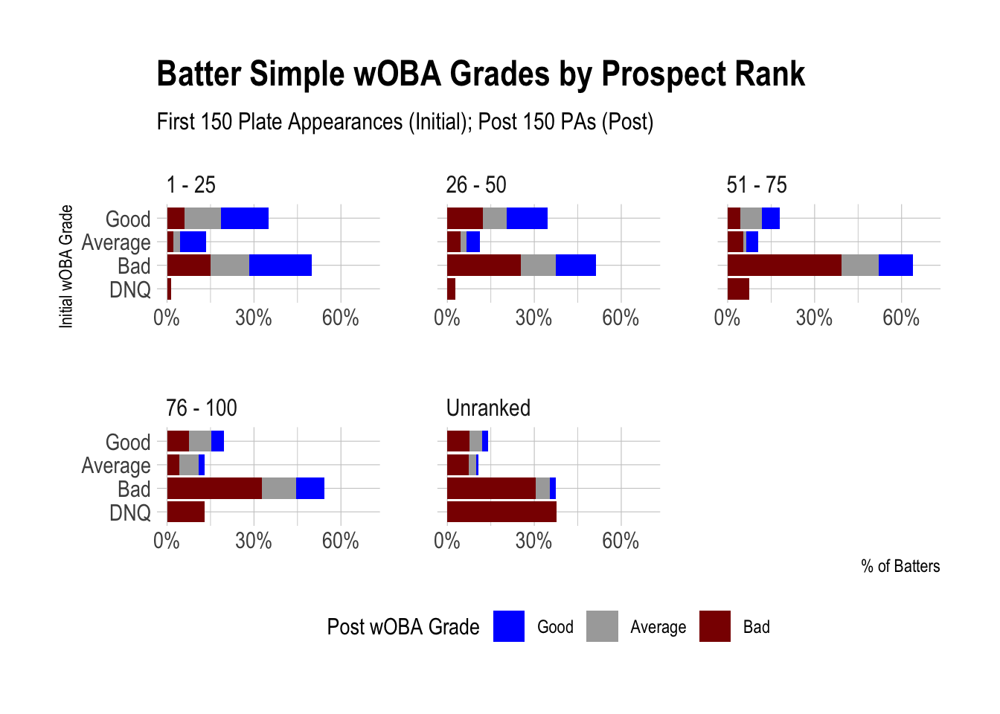
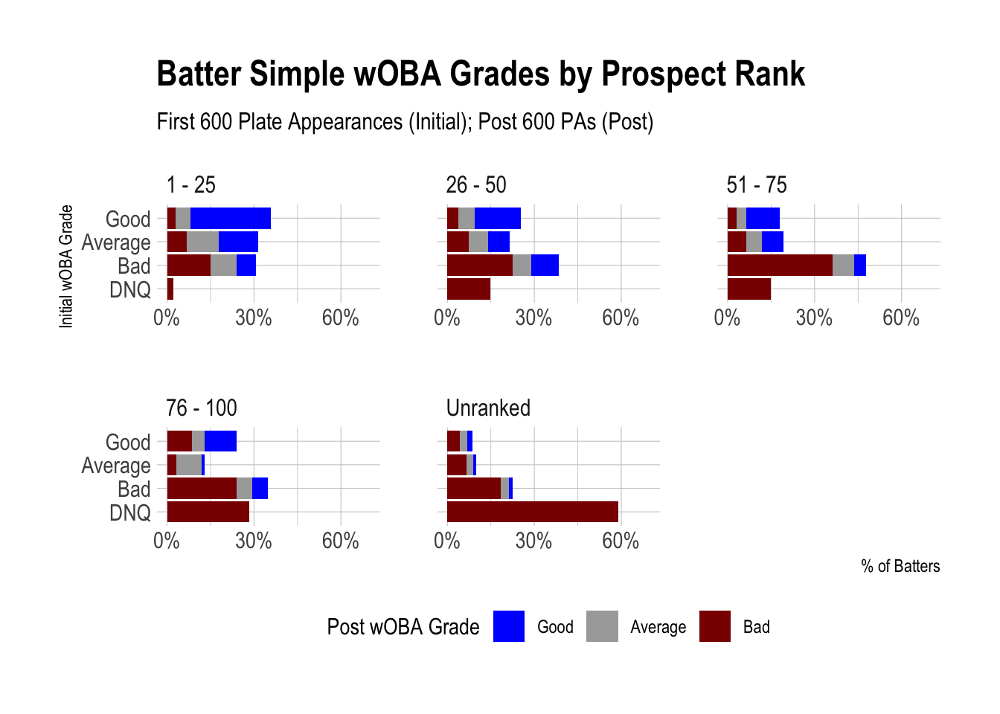
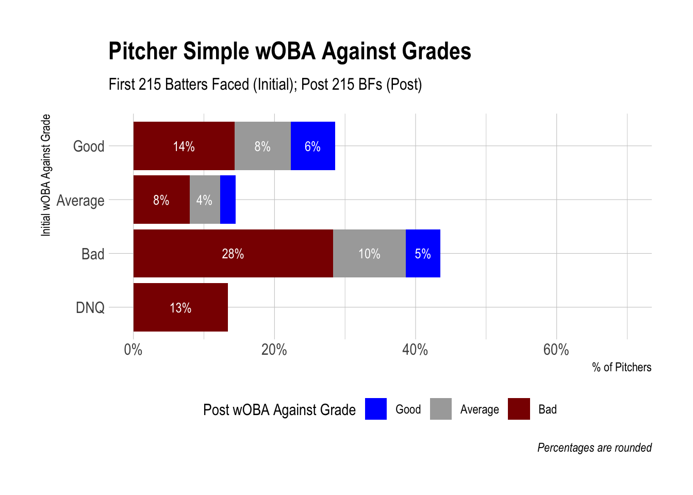
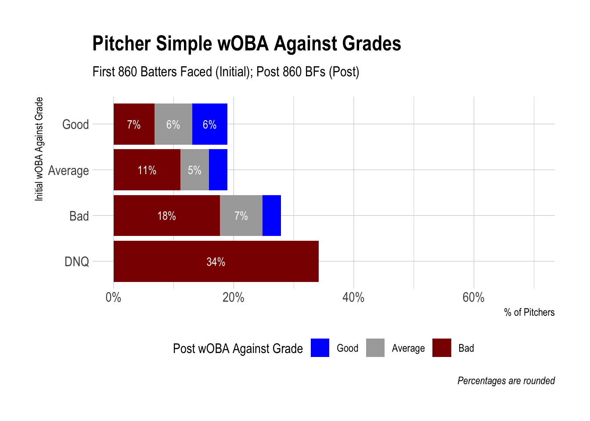
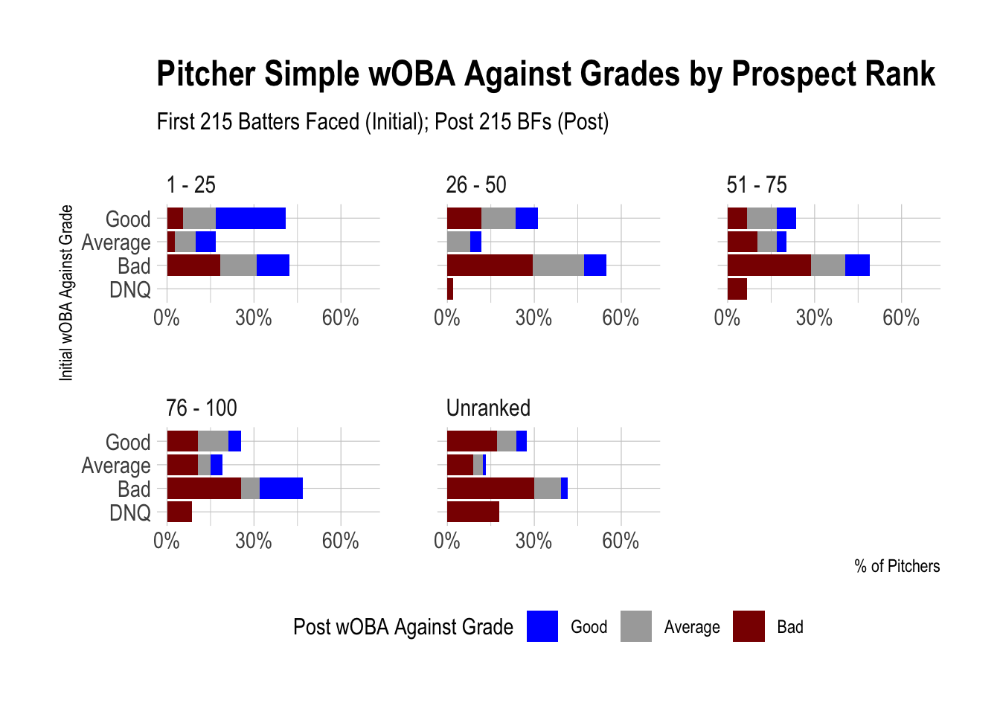

4 Simple wOBA Grades
4.1 Weighted On-Base Average (wOBA)
Before we get any further, we have to talk about Weighted On-Base Average (wOBA).
The sabermetric savants at FanGraphs explain wOBA, a creation of the master savant—Tom Tango—far more accurately and eloquently than I can. My key takeaways are that wOBA is a comprehensive offensive statistic which more accurately quantifies a batter’s performance than other more traditional statistics. Batting Average (BA), On-Base Percentage (OBP), Slugging Percentage (SLG), On-Base + Slugging Percentage (OPS), can’t capture the nuance of a batter’s value like wOBA does. This is because wOBA measures the precise effect (value) a walk, single, double, triple, home run, even hit-by-pitches (HBP) have on whether teams score a run or not and bakes that into the statistic.

For our purposes, wOBA will serve as our catch-all statistic to measure player performance.
The main limitation for us is that wOBA is not directly equivalent with fantasy baseball value. The biggest reason is Stolen Bases are excluded, which count for a portion of a player’s value (or lack of value) in fantasy baseball leagues. The second reason is that wOBA does not explicitly include Runs or RBIs, two additional fantasy categories, even though we know players who are on base more will generally score more runs and have more RBIs than players who make more outs. We could likely find more limitations, but those are the biggest.
Having said that, a glance at the leaderboards most seasons, and elite hitters almost always have high wOBAs. Second, our analysis is primarily focused on correlation between initial and career performance in the big leagues, not necessarily the intrinsic values of either. wOBA will certainly suffice for our analysis!
Because wOBA is an offensive statistic, it should be used with some caution for pitchers. There are interesting discussions here and here that lend insight into why that is, which also are relevant to batters. For our purposes, wOBA-against or wOBA-allowed is also sufficient despite its shortcomings for the two aforementioned reasons. If I had more time, I may have calculated and used K-BB% (Stikeouts minus Walks Percentage) as the catch-all pitching statistic, but wOBA-against will do.
4.2 Data Context
Some important context to keep in mind as you navigate through the different visualizations:
- All batters and starting pitchers who debuted from 1990 through 2010 are included
- Non-starting pitchers are not included
- Stats are from the 1990 season through 2020
- Intentional walks and sacrifice bunts are by default excluded from wOBA, so Plate Appearances (PAs) and Batters Faced (BF) are only those that ended in a wOBA-producing event
- An initial wOBA grade of “DNQ” stands for Did Not Qualify, meaning a player did not reach the stated Plate Appearances or Batters Faced thresholds
- For example, a batter who only had 120 career plate appearances did not qualify for either the 150 or 600 PA thresholds
- There is also a DNQ threshold set for the post wOBA grade
- Corresponding to the initial grade for 150 PAs, the post grade threshold is 600 PAs
- For 600 PAs, 1800 PAs
- For 215 BFs, 860 BFs
- For 860 BFs, 2580 BFs
- Post wOBA grades of DNQ are counted as “Bad” post grades in the plots below
- The Batters Faced threshold was chosen to equal roughly 50 Innings Pitched (215 BFs) and 200 Innings Pitched (860 BFs)
- Prospect ranks are from Baseball America preseason Top 100 lists
- If a prospect was on a top 100 list but fell off the list prior to their debut, they were not considered a top 100 prospect
- If a prospect was not on a top 100 list when they debuted but were added before they lost prospect eligibility, they are included (confirm this)
4.3 Batters

4.4 Initial Observations
- Nearly a third of batters did not even reach 150 PA and nearly half did not reach 600 PA.
- A batter who hit for a Good wOBA over their first 150 PA was more likely to have a Bad wOBA grade for the rest of their career than Good.
- Remember that a grade of “Did Not Qualify,” meaning in this case that they didn’t reach 600 PA, falls under a “Bad” grade. Both regression and attrition are contributing to this.
While this is interesting at a macro-level, watch what happens when we look at groups of batters based on their prospect rank.
4.5 Batters by Prospect Rank


4.6 Observations
The observations we made when looking at all batters remain true only when looking at certain groups of prospects, particularly unranked prospects. * For instance, a large percentage of the batters who did not qualify were unranked prospects.
You probably already sensed this, but a majority of batters are unranked prospects. They weight heavily in the graph with all batters, making it hard to see the effect of top ranked prospects.
Can you any spot differences between the 150 PA and 600 PA graphs?
Purely based on looking at them, especially for prospects ranked 1 through 75, the 600 PA graphs appear more orderly. Additionally, it looks like more batters are falling into the “Average” wOBA grade bucket. This speaks to larger sample sizes helping to reduce noise and volatility.
4.7 Pitchers


4.8 Pitchers by Prospect Ranks


4.9 Main Takeaway
The pitcher graphs don’t appear to have any glaring distinctions with the batter graphs.
With that said, the main takeaway I want emphasize is to look at players by their prospect rank.